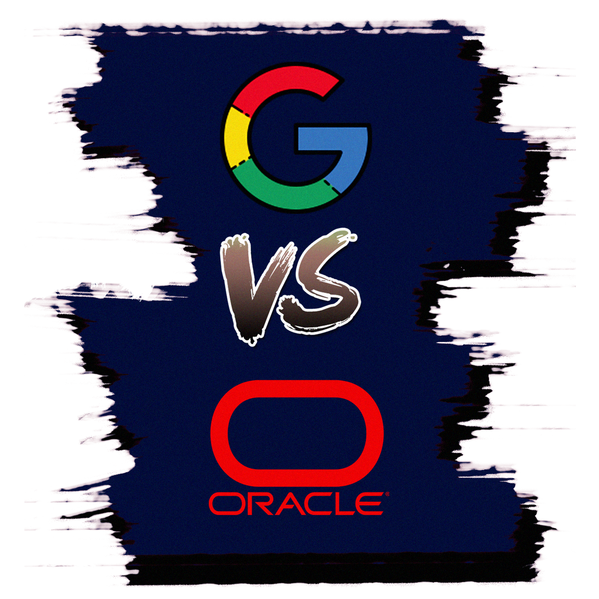

El tribunal explica que Google usó unas 11.500 líneas del código Java de Oracle para la creación de Android, pero que fue un uso legítimo y por ende Oracle no tiene derecho a recibir una compensación. Tras más de 10 años, la máxima autoridad judicial de los Estados Unidos ha concluido en favor de Google. Estos son los argumentos esgrimidos y las consecuencias que tendrá para los desarrolladores y empresas de software. Una gran noticia para la industria tecnológica que recibe el respaldo de la justicia a la hora de Re implementar APIs y aprovechar el código de otros para crear nuevos programas. Microsoft, Mozilla, la Internet Association, IBM, Reddit o la Electronic Frontier Foundation apoyaban a Google en este juicio. No es de extrañar, pues la motivación de Oracle era principalmente económica. Finalmente, la Corte Suprema de los EE.UU se ha puesto del lado de Google justificando el uso del 0,4% del código de Java para la creación de Android. Un código que se "transformó" en algo completamente nuevo.
En el centro está el debate sobre el uso legítimo o 'fair use'. Sobre si las líneas de código utilizadas han servido para un propósito adicional al original o todo es un "atroz plagio", como defendía Oracle, quien sostenía que la "estructura, secuencia y organización" del código utilizado era idéntica.
El uso del código de Java por parte de Google queda amparado por el "uso justo" ya que era necesario para la interoperabilidad y porque la Corte Suprema considera que el copyright no puede ser un motivo para "limitar el progreso creativo".
Para Google, la sentencia es "una victoria para los consumidores, la interoperabilidad y la informática".
Una visión que coincide con la de organizaciones como 'The Internet Archive', que catalogan la decisión como "un buen día para la Web abierta". "La Corte ha sido clara: el copyright no puede utilizarse para dañar el interés público", explica Brewster Kahle, fundador de Archive.org.
En la resolución, el Supremo de los EE.UU señala que la ley del copyright no es solo para proteger las innovaciones, también, en un sentido más amplio, para "estimular el progreso creativo". Así describe la Corte el papel que adopta el 'fair use':
"El uso legítimo puede desempeñar un papel importante a la hora de determinar el alcance legal de los derechos de autor de un programa informático. Puede ayudar a distinguir entre tecnologías. Puede distinguir entre características expresivas y funcionales del código cuando esas características se mezclan. Puede centrarse en la necesidad legítima de proporcionar incentivos para producir material protegido por derechos de autor al tiempo que se examina en qué medida una protección adicional crea daños no relacionados o ilegítimos en otros mercados o para el desarrollo de otros productos".
En el caso de Google, el uso intencionado del código de Java sirvió para ofrecer una nueva herramienta a los programadores. Según describen los jueces, el propósito de Google fue "permitir a los programadores trabajar en un entorno informático diferente sin descartar una parte de un lenguaje de programación familiar". Es decir, se apoyó la interoperabilidad. Un factor protegido por el "uso justo". Muchos esperaban que la decisión de la Corte aplicase sobre el caso concreto de Google y Oracle, pero a la práctica supone una resolución más amplia sobre el uso justo del software. Aplicable no solo a Java y Android, sino al uso que muchos pequeños desarrolladores hagan sobre el código y las APIs de otras empresas.
Sergio Carrasco, abogado del Icaib y experto en telecomunicaciones, nos explica que:
"Es una muy buena noticia, pues de lo contrario, como opinaban algunos jueces de instancias inferiores, podía crear un precedente muy peligroso"
En esta importante resolución se ha llegado a la conclusión que Google utilizó el código estrictamente necesario de Java, lo que no vulnera la propiedad intelectual y se considera un uso justo.
Igual que tenemos la API de OpenGL o Vulkan, la implementación de Google utiliza las llamadas a Java para su interoperabilidad con Android. Un ejemplo concreto pero que, según apunta Carrasco, abre la puerta a que los desarrolladores puedan reinventar estas llamadas sin que el desarrollador diga algo. Si el uso es el estrictamente necesario para su utilización, tendrán derecho a reaprovecharlas sin temor a una petición de compensación económica.
Charles Duan, director de política tecnológica en el R Street Institute, explica en redes sociales que los jueces entienden la reimplementación de las API como un uso justo como cuestión de ley, lo que significa que aplica a todas las API.
Wow--SCOTUS doesn't just rule in favor of Google in @googlevoracle, but says that API reimplementation is fair use *as a matter of law*, meaning that the decision applies to all APIs pic.twitter.com /AwRBGtZ5Pp
— Charles Duan (@charles_duan) April 5, 2021
La sentencia es muy importante para el mundo del software ya que cataloga la decisión del 'fair use' como una cuestión de ley, lo que supone fomentar la aplicación de este criterio al resto de APIs y casos equivalentes.